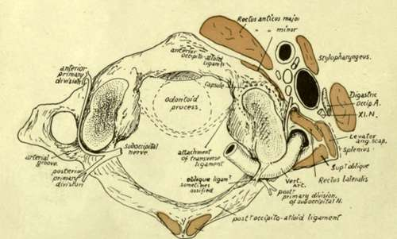
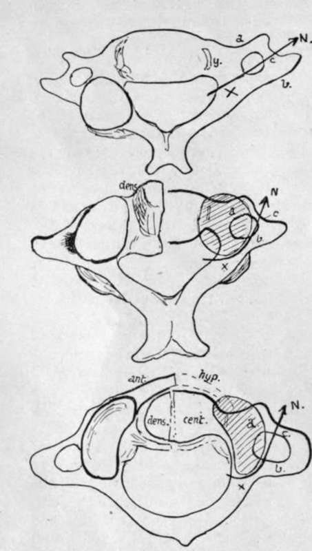
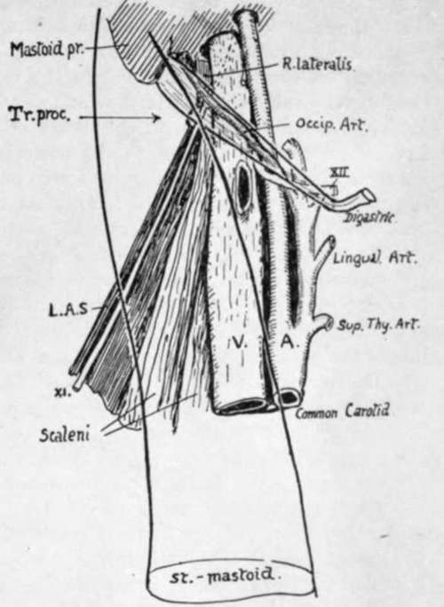

Atlas
Description
This section is from the book "The Anatomy Of The Human Skeleton", by J. Ernest Frazer. Also available from Amazon: The anatomy of the human skeleton.
Atlas
The tip of the anterior tubercle points down, and has the anterior common ligament attached to it : on each side of this (Fig. 19) the Longus colli is inserted on a rough area. The anterior occipito-atloid ligament has a strong median band on the upper part of the tubercle (so that a non-ligamentous area of bone separates this from the lower ligament), and at each side its lateral part makes a ridge on the bone running into the markings of the upper capsule.
Rectus anticus minor arises from the bone in front of the capsule : this muscle does not as a rule make much definite marking on the bone, but it does not extend out on to the transverse process, and is limited below by an ill-defined prominence continuous with the front limb of the transverse process. Below and internal to the prominence is a hollow which is filled by Rectus anticus major without affording origin to it.
Fig 20.-Diagram of atlas from above, showing structures in relation with it. Observe the situation of the suboccipital nerve, the relation of its two divisions to the vertebral artery, and the emergence of its anterior part between R. ant. minor and R. lat. The posterior wall of pharynx is in close°contact with K. ant. major and, between the two muscles, is related to the atlas. R. post, minor is on the posterior tubercle.
Fig. 21.-Schemes to show the modifications of the costal processes in the two upper vertebras consequent on the adoption of an enlarged neuro-central articulation as a main joint.
The prominence just mentioned, shown in Figs. 16 and 19, answers to the anterior tubercle of the transverse processes lower down. The modifications consequent on the growth of the neuro-central articulations in the upper two vertebra are shown schematically in Fig. 21. In the drawing the right-hand side indicates the fundamental principle that is common to the cervical segments, with the modifying factor, while the result is shown on the left-hand in each figure. The first figure represents the typical state, with a costal process (a), a tranverse process (b), and a costo-transverse bar (c). Articular processes can be neural (x) or neuro-central (y). In the typical cervical region they are neural, and lie, therefore, on the neural arch at the base of the transverse element, leaving the costal process clear. The second figure shows how, in the Axis, the upper neural articulation fails, and the neuro-central one enlarges, spreading outwards as shown by the shaded area, so that it covers the costal process and causes the course of the arterial canal to be turned outwards ; thus the condition already noted in the Axis is attained. The last drawing shows how a comparable condition is reached in the Atlas without much change in the direction of the foramen, because the articular surface is not so broad. Thus the costal process can be looked on as buried by the articular masses in the upper bones, and the partly-suppressed tubercle is all that remains to indicate its position, while the anterior boundary of the arterial foramen in these bones is really the costo-transverse bar. So the nerves (N) are seen to issue in corresponding and similar relations on all the bones.
The transverse process of the atlas (Fig. 15) has an external border that shows a sharp lower ridge : this ridge affords insertion to the aponeurosis of Splenius colli (S), and the concave surface internal to it, on the lower surface of the process, is roughened for the insertion of the Inferior Oblique. Above the ridge, on the upper aspect, are two impressions for Superior Oblique (S.O.) and Levator anguli scapulae (L.A.S.), the latter reaching the front corner of the process and the former extending from the posterior corner to the arterial groove. The Rectus lateralis has a faint marking behind and internal to the Levator, extending along the front limb of the process to the slight groove that lodges the anterior primary division of the suboccipital nerve. The nerve runs forward round the outer side of the articular mass (Fig. 20) lying deep to the inner border of the artery, and emerges between the Rectus lateralis and anticus minor, thus lying immediately behind the carotid sheath : after giving branches it turns down in front of the transverse process to join the next nerve. The carotid sheath is altogether in front of the process, and does not extend laterally beyond it as in the lower segments, partly because the vein here is smaller, but mainly owing to the breadth ot the Atlas : the tip of the process projects beyond the vein, and is crossed by the spinal accessory nerve as this leaves the sheath after passing behind or in front of the vein, while the posterior belly of the Digastric covers all the structures and separates them from the Sterno-mastoid. In this way the spinal accessory nerve passes on to the Levator anguli scapulae under cover of the Digastric, and when it emerges from under the lower border of that muscle it is lying on the Levator directly under cover of the Sterno-mastoid (Fig. 22).
Fig. 22.-to show the anterior relations of the transverse process (tr. proc.) of the atlas. the posterior belly of digastric and sternomastoid are represented as transparent, thus exhibiting the rectus lateralis and eleventh nerve related to the process. this is the only transverse process which projects beyond the vein.
The transverse process can be felt deeply on pressure through the Sterno-mastoid, below the mastoid process and a little behind the mandible.
The relation of the vertebral artery, as it turns round the articular process, to the nerve differs from that obtaining in the other segments: this is probably owing to the different value of the artery, which should be looked on here as an enlarged spinal branch, not comparable with the direct artery below this level. As the vessel runs from the transverse process to the posterior arch, it overhangs the outer border of the bone, which is notched here by a vein passing to the vertebral system. This notch is occasionally converted into a foramen by ossification in the fibrous tissue that bridges it in and supports the artery.
The same conversion may occur in the notch that marks the end of the arterial groove, behind the articular mass : this is usually bridged by a ligament, the " oblique ligament of the atlas" attached in front to the overhanging edge of the mass and extending back to the outer extremity of the ridge on the posterior arch that marks the line of the posterior occipito-atloid ligament.
The upper articular facet shows a tendency to division by a constriction of its area. Opposite this constriction there is a vascular pit on the apper surface of the internal protuberance caused by the lower articular surface : the vascular spot has the tubercle for the transverse ligament in front of it, while a small projection for the accessory atlo-axoid ligament may be seen below and internal and somewhat behind it.
On the under surface of the bone may be seen the line for the thin Lig. subflavum, evidently passing into the fibrous tissue that bridges over the venous notch in the bone. On the under side of the transverse process is the concavity for the Inferior Oblique, bounded by the ridge for Splenius colli, and a roughness on the anterior limb of the process marks the attachment of the intertransverse muscle. The markings of Longus colli and anterior common ligament are well seen from below.
The anterior surface of the posterior arch is smooth and is separated from the dura mater by a layer of soft vascular tissue : the front wall of the neural canal is formed by the ligaments that cover the back surface of the odontoid process.
Continue to: